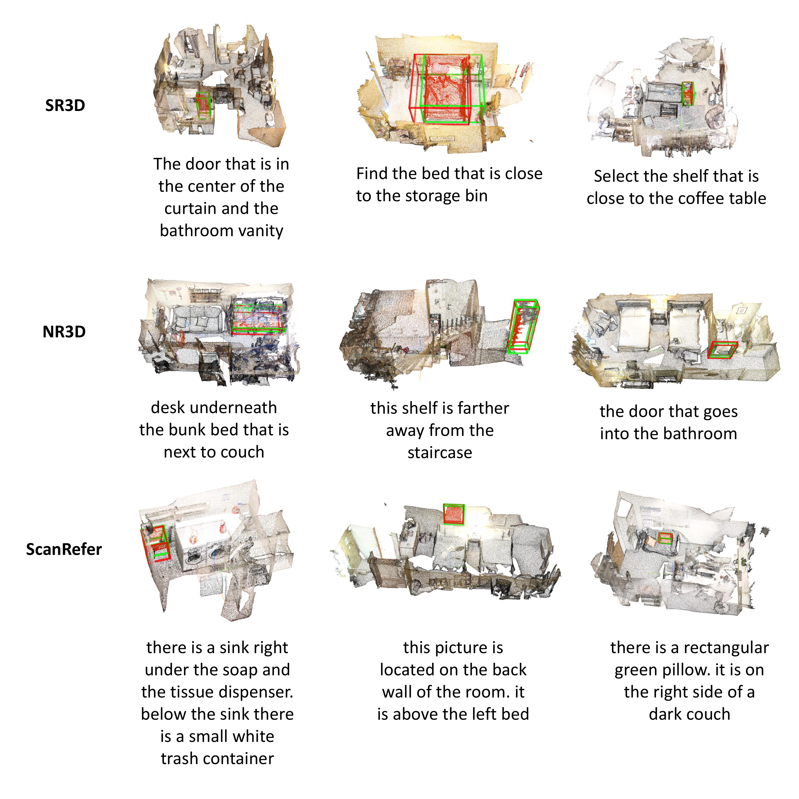
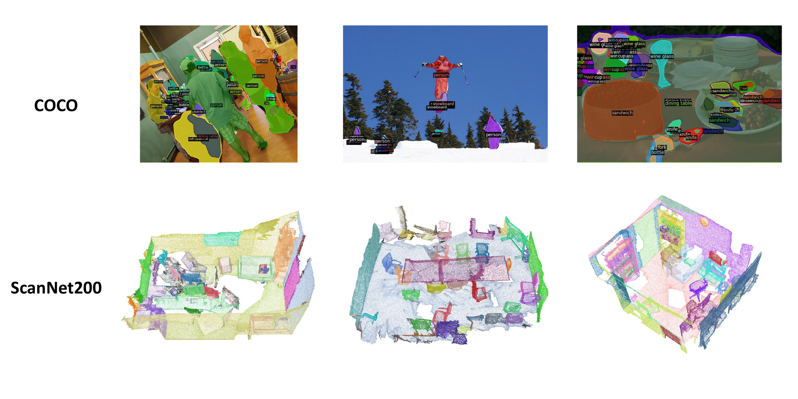
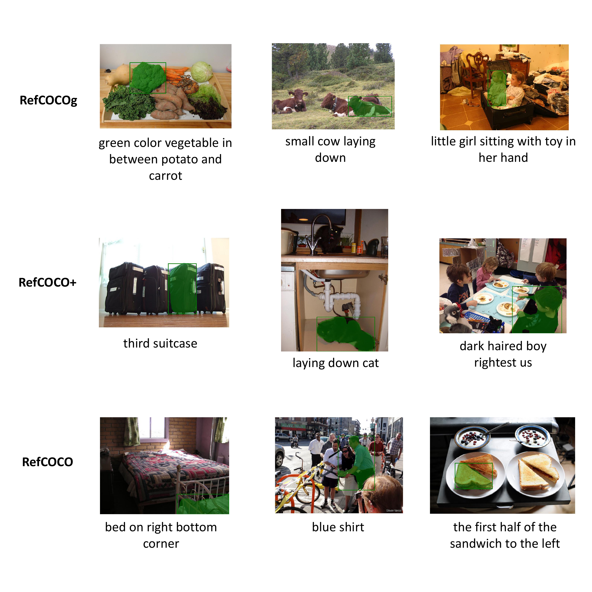
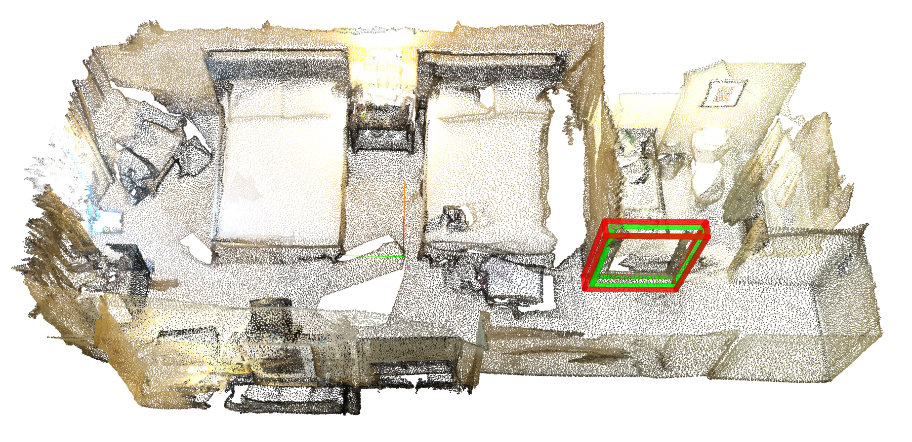
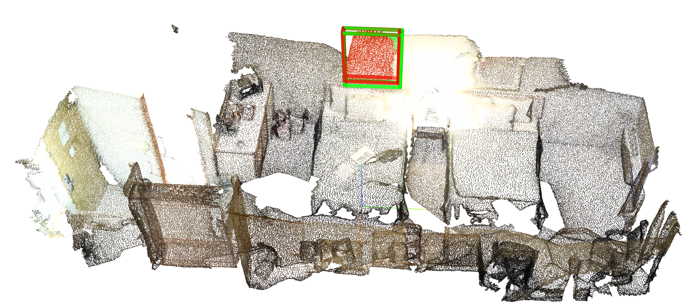
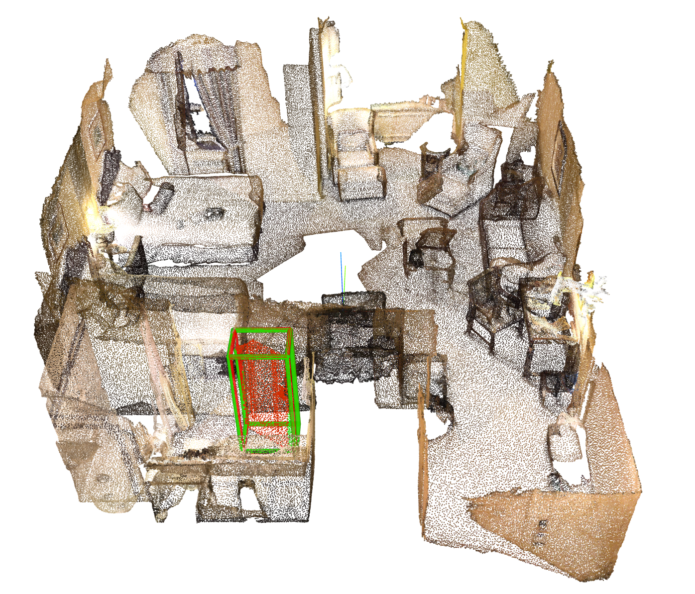
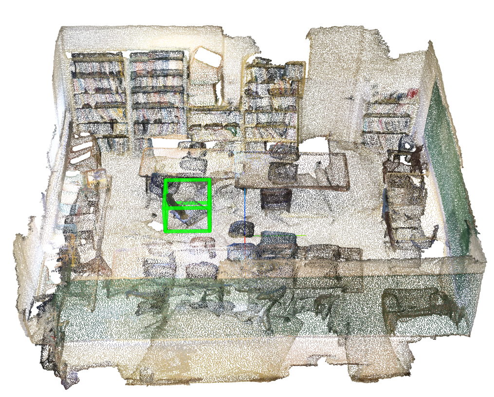
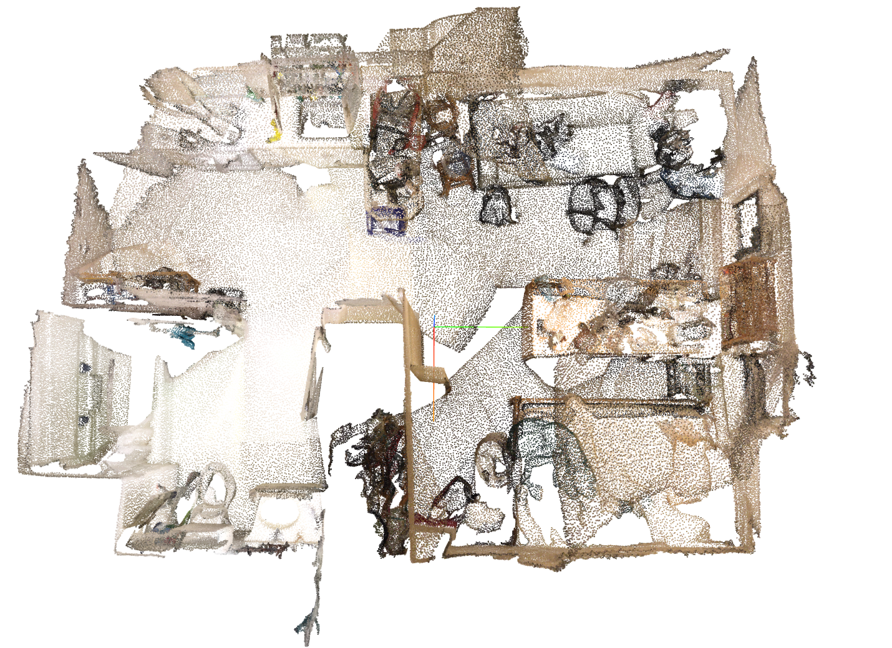
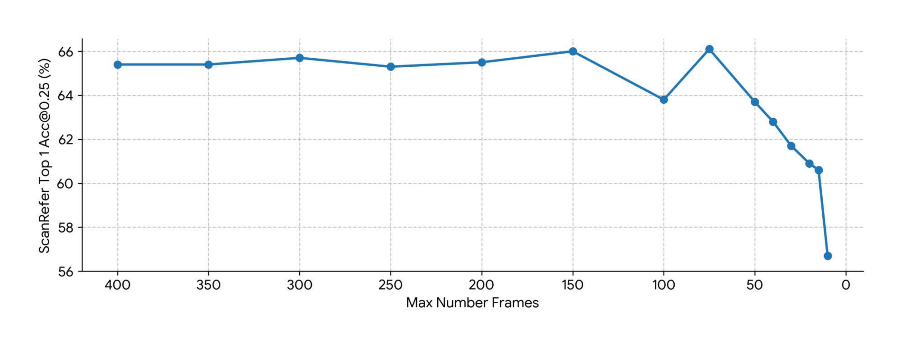
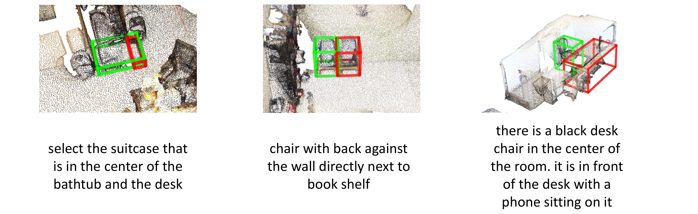

Part 4 · Qualitative Results
See Qwen-3D in Action
Qwen-3D unifies 3D referential grounding, instance segmentation, situated VQA, and strong 2D grounding/segmentation under one architecture.

3D referential grounding on SR3D, NR3D, and ScanRefer.

Instance segmentation on COCO (2D) and ScanNet200 (3D).

Visual question answering on ScanQA, SQA3D, and RealWorldQA.

2D referential grounding retained after 3D adaptation.
Demo Videos
Demo clip from project materials.
Additional qualitative walkthrough.
More Visualizations






Scaling with number of input views on ScanRefer.

Representative failure modes analyzed in the appendix.